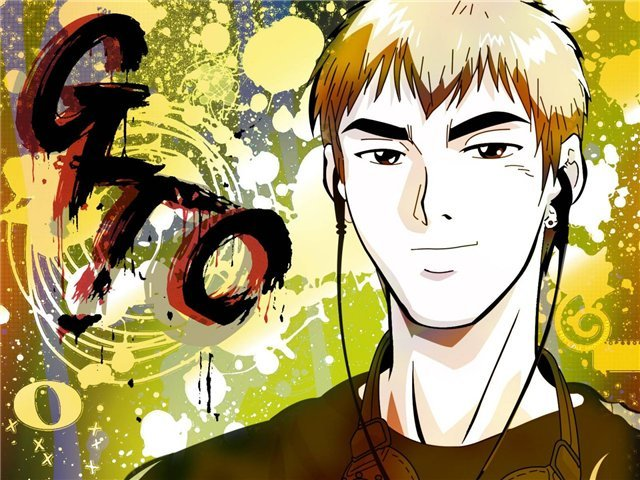

Сюжет

Онидзука Эйкити, известный главарь банды «Онибаку», вместе со своим бывшим одноклассником Рюдзи приезжает в Токио в поисках лучшей жизни. Спокойный и рассудительный Рюдзи открывает собственный автосервис, а Онидзука решает устроиться учителем в школу.
Преградой на пути к счастливой жизни преподавателя становится необразованность Эйкити и его, в общем-то, наплевательское отношение к собственному предмету. Естественно, что в государственной школе ловить ему нечего — шансов сдать экзамен на профпригодность у него никаких, — поэтому единственный путь в учителя Онидзуке лежит через частные школы. После долгих мытарств и злоключений, ему наконец удаётся устроиться в академию Священного леса, где он сразу же ввязывается в конфликт с заместителем директора и становится классным руководителем самого проблемного класса в школе. Ученики моментально объявляют новому преподавателю войну, но искренность и простота Онидзуки позволяют ему мало-помалу завоевать уважение как учеников, так и их родителей, а также преподавательского коллектива.
Все попытки выгнать Онидзуку из школы по причине его профессиональной некомпетентности заканчиваются неудачей из-за непосредственности, простоты и педагогического таланта молодого учителя. Он компенсирует ветер в голове искренним энтузиазмом и настойчивостью.
Список персонажей
Основные персонажи
Эйкити Онидзука (яп. 鬼塚 英吉 Онидзука Эйкити) — 22 года; холост; является бывшим капитаном сборной университета по каратэ, знаменитым байкером (точнее, босодзоку), ведущим разгульный образ жизни. Онидзука очень плохой учитель — он спит над учебниками, бубнит ученикам материал по книжке и абсолютно не знает собственных предметов — истории и социологии (в русской версии перевода — обществоведения), — но он отличный классный руководитель. Он не проводит границы между учителем и учеником и никогда не отказывает никому в помощи. Несмотря на свою показную несерьёзность, он всегда глубоко вникает в проблемы своих подопечных и всегда находит нестандартное, но эффективное решение. Онидзука не остановится ни перед чем, чтобы помочь ученику и доказать, что он — настоящий учитель. Больше всего на свете ценит честность и друзей.
Сэйю: Ватару Такаги
Адзуса Фуюцуки (яп. 冬月 あずさ Фуюцуки Адзуса) — молодая преподавательница академии Священного леса. Весёлая, обаятельная девушка, очень ответственно относящаяся к преподавательской работе и очень переживающая из-за любых конфликтов со своими учениками. Объект пылкой страсти Онидзуки, находится с ним в тёплых дружеских отношениях и всегда помогает ему при проблемах с работой и учёбой. Согласно манге, очень симпатизирует Онидзуке, каждый раз, когда с кем-то говорит о нём, собеседник обычно подмечает, что Фуюцуки говорит чуть ли не с благоговением. Очень хочет быть похожей на Онидзуку в плане отношения к ученикам. Однажды даже попыталась подражать ему в воспитательной работе с ученицами из своего класса (что сделала по совету Онидзуки, и вышло у неё достаточно хорошо). Когда узнала, что у Эйкити смертельно опасная патология головного мозга, наконец призналась самой себе, что влюблена в него и была готова на всё, чтобы он согласился на операцию (от которой тот категорически отказывался).
Сэйю: Фумико Орикаса
Хироси Утиямада (яп. 内山田 ひろし Утиямада Хироси) — нервный и злопамятный завуч академии Священного леса. Люто ненавидит Онидзуку за то, что тот недостаточно серьёзно относится к учебно-воспитательной работе и за его легкомысленные выходки. Раздражительность Утиямады вызвана тяжёлыми семейными проблемами — он давно потерял статус главы семьи, его не уважает дочь и не любит жена. К чести завуча стоит добавить, что несмотря на все свои отрицательные стороны, он действительно любит детей и ценит свою работу. По манге завуч ставит свою работу превыше всего, даже готов пожертвовать жизнью ученика, чтобы остаться на своей должности. Но после того, как он сказал Онидзуке, что можно пожертвовать одним учеником ради оставшихся четырёхсот, последний отделал завуча и своими доводами заставил пересмотреть мировоззрение Утиямады и вспомнить, почему тот захотел стать учителем. После этого завуч даже проникся уважением к Онидзуке и даже какое-то время пытался закрывать глаза на его выходки.
Сэйю: Юити Нагасима
Рёко Сакураи (яп. 桜井 良子 Сакураи Рё:ко) — директор академии Священного леса, пожилая женщина, которая любит поработать буфетчицей в своей школе. Тонкий психолог и прекрасный специалист. Защищает Онидзуку изо всех сил, так как уверена в том, что школе нужен такой человек.
Сэйю: Ёсико Окамото
Рюдзи Дамма (яп. 弾間 龍二 Дамма Рюдзи) — бывший одноклассник и товарищ по банде Онидзуки, теперь владеет собственным автосервисом. Контакты с Эйкити поддерживает, в основном, при помощи совместных пьянок, на которых Онидзука напивается как свинья, а Рюдзи транспортирует его в школу на плечах. Когда долг Эйкити перед Рюдзи зашкалил за шестизначные числа, Рюдзи зарёкся не помогать другу деньгами, так что теперь он может помочь Онидзуке только советом и моральной поддержкой. Впрочем, учитывая то, что Дамма гораздо более рассудителен, чем его друг-разгильдяй, то и такая помощь значит немало.
Сэйю: Иссин Тиба
Тосиюки Саэдзима (яп. 冴島 俊行 Саэдзима Тосиюки) — один из старых друзей Эйкити Онидзуки и Рюдзи Даммы, бывший главарь банды разбойников, ныне офицер полиции. Алчный и похотливый, как и Эйкити, не очень его любит и не считает другом, но тем не менее они время от времени помогают друг другу.
Сэйю: Кадзуки Яо
Ученики академии Священного леса
Ёсито Кикути (яп. 菊地 善人 Кикути Ёсито) — программист и дизайнер, неплохо владеет карате. Школьный гений, который первым присоединился к бойкоту против Онидзуки и первым вышел из него, постановив, что новый учитель не такой, как предыдущие, шестерых из которых он заставил уйти с работы в академии, и что Онидзуке можно доверять. Спокойный Кикути выступает отличным противовесом импульсивному Онидзуке и всегда готов помочь последнему хорошей идеей, умным советом. Согласно манге, курит.
Сэйю: Хикару Мидорикава
Кунио Мураи (яп. 村井 國男 Мураи Кунио) — мальчик с крайне сильным материнским комплексом. Терпеть не может, когда Онидзука заигрывает с его очень молодой и очень красивой матерью. Ещё один активный член бойкота против Онидзуки, однако, проникся к нему симпатией и долей уважения и очень много времени проводит с ним. Смелый и бесстрашный парень с лидерскими качествами.
Сэйю: Томокадзу Сэки
Уруми Кандзаки (яп. 神崎 麗美 Кандзаки Уруми) — гениальная, расчётливая и хладнокровная девушка. Её IQ превышает 200 пунктов, но это не столько приносило счастье Уруми, сколько было для неё трагедией. Её мать хотела иметь детей, не выходя замуж, и тогда решилась на искусственное оплодотворение. Её необычные умственные способности сначала отталкивали от неё сверстников и притягивали учителей, потом — наоборот. Она заставила уволиться уже нескольких учителей, но школьная администрация держится за девушку, ведь она получила императорскую стипендию. Тяжёлую травму на психике Кандзаки оставила ссора с первой учительницей, и эту травму смягчило только вмешательство Онидзуки. Она пропускала занятия, потому что ей было не интересно учиться в школе, но вернулась, услышав про нового учителя. Кандзаки тепло относится к Кикути, Эйкити и Томоко, и более чем прохладно — ко всем остальным. Её психологическое развитие сдвинулось с мёртвой точки после встречи с новым учителем. По манге после того, как Онидзука провёл свою «терапию» с ней, Уруми очень привязалась к нему и даже начала испытывать к Онидзуке любовные чувства. Когда же Эйкити попал в больницу и был при смерти, она даже пыталась вскрыть себе вены (197 выпуск).
Сэйю: Котоно Мицуиси
Нобору Ёсикава (яп. 吉川 のぼる Ёсикава Нобору) — школьный неудачник, тихий двоечник, фанат игр на игровой приставке. Как самый слабый ученик класса, он постоянно подвергается нападкам и издевательствам со стороны девочек, в частности — со стороны Уэхары. Дух Ёсикавы был полностью сломлен, несколько раз пытался покончить жизнь самоубийством, но Онидзука спас ему жизнь и оказал поддержку в защите от постоянных издевательств. Ёсикава — первый и самый преданный друг Онидзуки в академии Священного леса. По ходу сюжета он сильно меняется и показывает себя всё более и более мужественным. Так он не задумываясь бросается спасать упавшую с обрыва в океан Анко (которая больше всех отравляла его жизнь в школе). Затем он всё той же Анко показывает твёрдость характера и способность быстро анализировать ситуацию.
Сэйю: Косукэ Окано
Мияби Аидзава (яп. 相沢 雅 Аидзава Мияби) — холодная и замкнутая в себе, самая упрямая противница Онидзуки в школе. Главный антагонист аниме. После смерти её лучшей подруги считает, что учителя совершенно не ценят своих учеников и легко предадут их в угоду своим интересам. Мияби добивается увольнения Онидзуки любыми способами и абсолютно не прислушивается к доводам своих одноклассников, если они каким-либо образом защищают Эйкити. В манге причиной, по которой класс взбунтовался против учителей было то, что один из предыдущих учителей изнасиловал Аидзаву. Впоследствии выяснилось, что преподаватель никого не насиловал, а Мияби, которая была влюблена в него, решила отомстить ему после того, как тот предал её (решил жениться на другой женщине). Потом она раскаялась, но боялась признаться в том, что сделала.
Сэйю: Дзюнко Нода
Анко Уэхара (яп. 上原 杏子 Уэхара Анко) — хулиганка и подруга Аидзавы, проявляющая наибольший энтузиазм в идеях издевательства над Ёсикавой. Она пытается унизить Нобору любыми средствами, лишь бы только скрыть тот факт, что она влюблена в школьного неудачника, слабака и плаксу. Нобору боится Уэхару до уровня панического ужаса и ночных криков. Несмотря на это, во время поездки на остров Окинава, в результате действий со стороны Эйкити, Уэхара признаётся, что любит Ёсикаву. Согласно манге курит.
Сэйю: Акэми Окамура
Кодзи Фудзиёси (яп. 藤吉 晃二 Фудзиёси Ко:дзи) — приятель Мураи, ничем не выделяющийся ученик, среднего уровня успеваемости, ни в каких порочащих его делах замечен не был. Отличается кристальной честностью — вероятно потому, что происходит из небогатой семьи, где мать постоянно работает, чтобы обеспечить сына, но никогда не жалуется и строго воспитывает его.
Сэйю: Дзюнъити Сувабэ
Тадаки Кусано (яп. 草野 忠明 Кусано Тада:ки) — второй приятель Мураи играет роль статиста «за спиной». Ничем особым не выделяется. Время от времени выдаёт реплики, в основном, поддерживая друга.
Сэйю: Томоки Янаги
Томоко Номура (яп. 野村 朋子 Номура Томоко) — очень красивая девочка с развитыми формами, но инфантильная и неуклюжая, из-за чего очень страдает. В младших классах была лучшей подругой Мияби. Эйкити использует старые связи, оставшиеся ещё с байкерских времён, чтобы протолкнуть Номуру в модельный бизнес, где она легко удерживается по причине своей красоты и простоты.
Сэйю: Аяко Кавасуми
Фуюми Кудзиракава (яп. 鯨川 冬美 Кудзиракава Фуюми) — член баскетбольной команды академии, очень высокая и сильная, но крайне скромная девочка. Влюблена в Мураи, поэтому очень сильно комплексует по поводу своего высокого роста, из-за которого над ней смеются все мальчики школы. Мураи понятия не имеет о чувствах, которые к нему испытывает Кудзиракава, но всегда протестует против несправедливых издевательств над ней, за что и был один раз сильно избит. Фуюми не решается раскрыть ему свои чувства и ограничивается тем, что подкидывает записки от некой «Ф.» в его шкафчик для обуви.
Преподаватели академии Священного леса
Сугуру Тэсигавара (яп. 勅使河原 優 Тэсигавара Сугуру) — маньяк и учитель математики, тайно влюблённый в Адзусу Фуюцуки. Ненавидит Онидзуку за то, что тот, выпускник третьесортного колледжа, умудрился каким-то образом обратить на себя внимание Адзусы, в то время как он сам, человек с двумя высшими образованиями, до сих пор следит за объектом своих желаний только в телескоп. Тесигавара коллекционирует фотографии Фуюцуки, чтобы однажды показать эту коллекцию как доказательство своей любви. Согласно манге похитил Адзусу, чтобы жениться на ней. Был разоблачён Онидзукой и младшей сестрой Адзусы Макото. После чего захватил школу, но был остановлен своим старшим братом. Рассказал историю своей жизни Адзусе и хотел покончить с собой, но его спас Онидзука, с которым они стали друзьями.
Сэйю: Тору Фуруя
Хадзимэ Фукурода (яп. 袋田 はじめ Фукурода Хадзимэ) — учитель физкультуры, недовольный Онидзукой из-за того, что тот постоянно срывает его уроки, устраивая со своим классом какую-нибудь игру на воздухе. Фукурода прекрасный атлет и профессиональный учитель, но большим умом не отличается, что позволяет Эйкити легко отпираться от всех претензий со стороны Хадзимэ.
Сэйю: Кадзухиро Наката
Хироси Котятани (яп. 小茶谷 宏 Котятани Хироси) — учитель химии, которого постоянно называют «чихуахуа» из-за его внешней схожести с этой породой собак. После «шуточки» Кандзаки он стал напоминать собаку ещё больше.